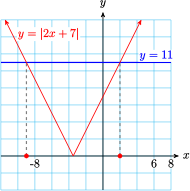
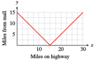
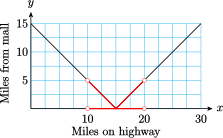

Section 2.5 The Absolute Value Function
¶Subsection 2.5.1 Introduction
The absolute value function is used to model problems involving distance. Recall that the absolute value of a number gives the distance from the origin to that number on the number line.
Distance and Absolute Value.
The distance between two points \(x\) and \(a\) is given by \(\abs{x - a}\text{.}\)
For example, the equation \(\abs{x - 2} = 6\) means "the distance between \(x\) and \(2\) is \(6\) units." The number \(x\) could be to the left or the right of \(2\) on the number line. Thus, the equation has two solutions, \(8\) and \(-4\text{,}\) as shown below.
Example 2.5.1.
Write each statement using absolute value notation. Illustrate the solutions on a number line.
- \(x\) is three units from the origin.
- \(p\) is two units from \(5\text{.}\)
- \(a\) is within four units of \(-2\text{.}\)
First, restate each statement in terms of distance.
-
The distance between \(x\) and the origin is three units, or \(\abs{x} = 3\text{.}\) Thus, \(x\) can be \(3\) or \(-3\text{.}\)

-
The distance between \(p\) and \(5\) is two units, or \(\abs{p - 5} = 2\text{.}\) If we count two units on either side of \(5\text{,}\) we see that \(p\) can be \(3\) or \(7\text{.}\)

-
The distance between \(a\) and \(-2\) is less than four units, or \(\abs{a - (-2)} \lt 4\text{,}\) or \(\abs{a + 2} \lt 4\text{.}\) Count four units on either side of \(-2\text{,}\) to find \(-6\) and \(2\text{.}\) Then \(a\) is between \(-6\) and \(2\text{,}\) or \(-6 \lt a \lt 2\text{.}\)

Checkpoint 2.5.2.
Write each statement using absolute value notation; then illustrate the solutions on a number line.
\(x\) is five units away from \(-3\text{.}\)
\(x\) is at least six units away from \(4\text{.}\)
-
\(\abs{x+3}=5\)

-
\(\abs{x-4}\ge 6\)
Subsection 2.5.2 Absolute Value Equations
We can use distances on a number line to solve simple equations such as
First, we factor out the coefficient of \(x\text{,}\) to get \(\abs{3(x - 2)} = 9\text{.}\) Because of the multiplicative property of the absolute value, namely that \(\abs{ab} = \abs{a}\abs{b}\text{,}\) we can write the left side as
which tells us that the distance between \(x\) and \(2\) is \(3\) units, so the solutions are \(x = -1\) and \(x = 5\text{.}\)
Alternatively, we can use graphs when working with absolute values. For example, we know that the simple equation \(\abs{x} = 5\) has two solutions, \(x = 5\) and \(x = -5\text{.}\)
In fact, we can see from the graph at right that the equation \(\abs{x} = k\) has two solutions if \(k \gt 0\text{,}\) one solution if \(k = 0\text{,}\) and no solution if \(k \lt 0\text{.}\)

Example 2.5.3.
Use a graph of \(y = \abs{3x - 6}\) to solve the equation \(\abs{3x - 6} = 9\text{.}\)
Use a graph of \(y = \abs{3x - 6}\) to solve the equation \(\abs{3x - 6} = -2\text{.}\)
-
The graph shows the graphs of \(y = \abs{3x - 6}\) and \(y = 9\text{.}\) We see that there are two points on the graph of \(y = \abs{3x - 6}\) that have \(y = 9\text{,}\) and those points have \(x\)-coordinates \(x = -1\) and \(x = 5\text{.}\) We can verify algebraically that the solutions are \(-1\) and \(5\text{.}\)
\begin{equation*} \begin{aligned}[t] x \amp = \alert{-1}\text{: } ~ ~ \abs{3(\alert{-1}) - 6} = \abs{-9} = 9\\ x \amp = \alert{5}\text{: } ~ ~ \abs{3(\alert{5}) - 6} = \abs{9} = 9 \end{aligned} \end{equation*} There are no points on the graph of \(y = \abs{3x - 6}\) with \(y = -2\text{,}\) so the equation \(\abs{3x - 6} = -2\) has no solutions.
Technology 2.5.4. Solving Absolute Value Equations.
We can use a graphing calculator to solve the equations in Example 2.5.3.
The graph shows the graphs of \(Y_1 = \text{abs}(3X - 6)\) and \(Y_2 = 9\) in the window
We use the Trace or the intersect feature to locate the intersection points at \((-1, 9)\) and \((5, 9)\text{.}\)
Checkpoint 2.5.5.
- Graph \(y = \abs{2x + 7}\) for \(-12 \le x \le 8\text{.}\)
- Use your graph to solve the equation \(\abs{2x + 7} = 11\text{.}\)
- 
\(x=9\) or \(x=2\)
To solve an absolute value equation algebraically, we use the definition of absolute value.
Example 2.5.6.
Solve the equation \(\abs{3x - 6} = 9\) algebraically.
We write the piecewise definition of \(\abs{3x - 6}\text{.}\)
Thus, the absolute value equation \(\abs{3x - 6} = 9\) is equivalent to two regular equations:
or, by simplifying the second equation,
Solving these two equations gives us the same solutions we found in Example 2.5.3, namely \(x = 5\) and \(-1\text{.}\)
In general, we have the following strategy for solving absolute value equations.
Absolute Value Equations.
The equation
is equivalent to
Checkpoint 2.5.7.
Solve \(\abs{2x + 7} = 11\) algebraically.
\(x=-9\) or \(x=2\)
Subsection 2.5.3 Absolute Value Inequalities
We can also use graphs to solve absolute value inequalities. Look again at the graph of \(y = \abs{3x - 6}\) in figure (a) below.
Because of the V-shape of the graph, all points with \(y\)-values less than \(9\) lie between the two solutions of \(~\abs{3x - 6} = 9~\text{,}\) that is, between \(-1\) and \(5\text{.}\) Thus, the solutions of the inequality \(~\abs{3x - 6} \lt 9~\) are \(-1 \lt x \lt 5\text{.}\) (In the Homework Problems, you will be asked to show this algebraically.)
On the other hand, to solve the inequality \(~\abs{3x - 6} \gt 9~\text{,}\) we look for points on the graph with \(y\)-values greater than \(9\text{.}\) In figure (b), we see that these points have \(x\)-values outside the interval between \(-1\) and \(5\text{.}\) In other words, the solutions of the inequality \(~\abs{3x - 6} \gt 9~\) are \(x \lt -1\) or \(x \gt 5\text{.}\)
Thus, we can solve an absolute value inequality by first solving the related equation.
Absolute Value Inequalities.
Suppose the solutions of the equation \(\abs{ax+b}=c\) are \(r\) and \(s\text{,}\) with \(r \lt s\text{.}\) Then
- The solutions of \(~\abs{ax+b} \lt c~\) are\begin{equation*} r \lt x \lt s \end{equation*}
- The solutions of \(~\abs{ax+b} \gt c~\) are\begin{equation*} x \lt r ~~\text{ or }~~ x \gt s \end{equation*}
Example 2.5.8.
Solve \(~\abs{4x - 15} \lt 0.01\)
First, we solve the equation \(~\abs{4x - 15} = 0.01\text{.}\) There are two cases:
Because the inequality symbol is \(\lt\text{,}\) the solutions of the inequality are between these two values: \(3.7475 \lt x \lt 3.7525\text{.}\) In interval notation, the solutions are \((3.7475, 3.7525)\text{.}\)
Checkpoint 2.5.9.
- Solve the inequality \(~\abs{2x + 7} \lt 11\)
- Solve the inequality \(~\abs{2x + 7} \gt 11\)
\((-9,2)\)
\((-\infty,-9) \cup (2, \infty)\)
Subsection 2.5.4 Using the Absolute Value in Modeling
In the next Example, we use the absolute value function to model a problem about distances.
Example 2.5.10.
Marlene is driving to a new outlet mall on Highway 17. There is a gas station at Marlene's on-ramp, where she buys gas and resets her odometer to zero before getting on the highway. The mall is only 15 miles from Marlene’s on-ramp, but she mistakenly drives past the mall and continues down the highway. Marlene's distance from the mall is a function of how far she has driven on Highway 17.

- Make a table of values showing how far Marlene has driven on Highway 17 and how far she is from the mall.
- Make a graph of Marlene’s distance from the mall versus the number of miles she has driven on the highway. Which of the basic graphs from Section 2.2 does your graph most resemble?
- Find a piecewise defined formula that describes Marlene’s distance from the mall as a function of the distance she has driven on the highway.
-
Marlene gets closer to the mall for each mile that she has driven on the highway until she has driven 15 miles, and after that she gets farther from the mall.
Miles on highway \(0\) \(5\) \(10\) \(15\) \(20\) \(25\) \(30\) Miles from mall \(15\) \(10\) \(5\) \(0\) \(5\) \(10\) \(15\) -
We plot the points in the table to obtain the graph shown below. This graph looks like the absolute value function defined in Section 2.2, except that the vertex is the point \((15, 0)\) instead of the origin.
 -
Let \(x\) represent the number of miles on the highway and \(f (x)\) the number of miles from the mall. For \(x\)-values less than \(15\text{,}\) the graph is a straight line with slope \(-1\) and \(y\)-intercept at \((0, 15)\text{,}\) so its equation is \(y = -x + 15\text{.}\) Thus,
\begin{equation*} f (x) = -x + 15~~~ \text{ when } ~~~0 \le x \lt 15 \end{equation*}On the other hand, when \(x \ge 15\text{,}\) the graph of \(f\) is a straight line with slope \(1\) that passes through the point \((15, 0)\text{.}\) The point-slope form of this line is
\begin{equation*} y = 0 + 1(x - 15) \end{equation*}so \(y = x - 15\text{.}\) Thus,
\begin{equation*} f (x) = x - 15~~~ \text{ when }~~~ x \ge 15 \end{equation*}Combining the two pieces, we obtain
\begin{equation*} f (x) = \begin{cases} -x + 15~~~ \amp \text{when }~~~ 0\le x\lt 15\\ x - 15~~~ \amp \text{when }~~~ x\ge 15 \end{cases} \end{equation*}The graph of \(f (x)\) is a part of the graph of \(y = \abs{x - 15}\text{.}\) If we think of the highway as a portion of the real number line, with Marlene’s on-ramp located at the origin, then the outlet mall is located at \(15\text{.}\) Marlene's coordinate as she drives along the highway is \(x\text{,}\) and the distance from Marlene to the mall is given by \(f (x) = \abs{x - 15}\text{.}\)
Checkpoint 2.5.11.
- Use the graph in Example 2.5.10 to determine how far Marlene has driven when she is within \(5\) miles of the mall. Write and solve an absolute value inequality to verify your answer.
- Write and solve an absolute value inequality to determine how far Marlene has driven when she is at least \(10\) miles from the mall.
-
\(\abs{x-15} \lt 5\text{;}\) \(~10 \lt x \lt 20\)
 -
\(\abs{x-15} \ge 10\text{;}\) \(~x\le 5~\) or \(~x\ge25\)

Subsection 2.5.5 Measurement Error
If you weigh a sample in chemistry lab, the scale’s digital readout might show \(6.0\) grams. But it is unlikely that the sample weighs exactly \(6\) grams; there is always some error in measured values.
Because the scale shows the weight as \(6.0\) grams, we know that the true weight of the sample must be between \(5.95\) grams and \(6.05\) grams: If the weight were less than \(5.95\) grams, the scale would round down to \(5.9\) grams, and if the weight were more than \(6.05\) grams, the scale would round up to \(6.1\) grams. We should report the mass of the sample as \(6 \pm 0.05\) grams, which tells the reader that the error in the measurement is no more than \(0.05\) grams.
We can also describe this measurement error, or error tolerance, using an absolute value inequality. Because the measured mass m can be no more than \(0.05\) from \(6\text{,}\) we write
Note that the solution of this inequality is \(5.95 \le m \le 6.05\text{.}\)
Example 2.5.12.
- The specifications for a computer chip state that its thickness in millimeters must satisfy \(\abs{t - 0.023} \lt 0.001\text{.}\) What are the acceptable values for the thickness of the chip?
- The safe dosage of a new drug is between \(250\) and \(450\) milligrams, inclusive. Write the safe dosage as an error tolerance involving absolute values.
The error tolerance can also be stated as \(t = 0.023 \pm 0.001\) millimeters, so the acceptable values are between \(0.022\) and \(0.024\) millimeters.
-
The safe dosage \(d\) satisfies \(250 \le d \le 450\text{,}\) as shown below.

The center of this interval is \(350\text{,}\) and the endpoints are each \(100\) units from the center. Thus, the safe values are within \(100\) units of \(350\text{,}\) or
\begin{equation*} \abs{d - 350} \le 100 \end{equation*}
Checkpoint 2.5.13.
The temperature, \(T\text{,}\) in a laboratory must remain between \(9\degree\text{C}\) and \(12\degree\text{C}\text{.}\)
- Write the error tolerance as an absolute value inequality.
- For a special experiment, the temperature in degrees celsius must satisfy \(~~\abs{T - 6.7} \le 0.03\text{.}\) Give the interval of possible temperatures.
\(\abs{T-10.5} \lt 1.5\)
\(6.67 \le T \le 6.73\)
Subsection 2.5.6 Section Summary
¶Subsubsection 2.5.6.1 Vocabulary
Look up the definitions of new terms in the Glossary.
Absolute value equation
Absolute value inequality
Error tolerance
Subsubsection 2.5.6.2 CONCEPTS
The absolute value is used to model distance: The distance between two points \(x\) and \(a\) is given by \(\abs{x - a}\text{.}\)
Absolute Value Equations.
The equation
\begin{equation*} \abs{ax + b} = c \hphantom{break} (c \gt 0) \end{equation*}is equivalent to
\begin{equation*} ax + b = c ~~\text{ or }~~ ax + b = -c \end{equation*}Absolute Value Inequalities.
Suppose the solutions of the equation \(\abs{ax+b}=c\) are \(r\) and \(s\text{,}\) with \(r \lt s\text{.}\) Then
- The solutions of \(\abs{ax+b} \lt c\) are\begin{equation*} r \lt x \lt s \end{equation*}
- The solutions of \(\abs{ax+b} \gt c\) are\begin{equation*} x \lt r ~~\text{ or }~~ x \gt s \end{equation*}
- The solutions of \(\abs{ax+b} \lt c\) are
The error tolerance \(e\) in a measurement \(M\) can be expressed as \(\abs{x - M}\lt e\text{,}\) or as \(x = M \pm e\text{.}\) Both indicate that \(M - e\lt x\lt M + e\text{.}\)
Subsubsection 2.5.6.3 STUDY QUESTIONS
Write a function that models the distance between \(x\) and a fixed point \(k\) on the number line.
For what values of \(c\) does the equation \(\abs{ax + b} = c\) have one solution? No solution?
If you know that the solutions of \(\abs{ax + b}\lt c\) are \(-3\lt x\lt 6\text{,}\) what are the solutions of \(\abs{ax + b}\gt c\text{?}\)
What is the center of the interval \([220, 238]\text{?}\)
What is the center of the interval \([a, b]\text{?}\)
Subsubsection 2.5.6.4 SKILLS
Practice each skill in the Homework 2.11 problems listed.
Use absolute value notation to write statements about distance: #1–8
Use graphs to solve absolute value equations and inequalities: #9–12
Solve absolute value equations: #13–24
Solve absolute value inequalities: #25–40
Express error tolerances using absolute value notation: #41–48
Analyze absolute value functions: #49–56
Model problems about distance using the absolute value function: #57–60